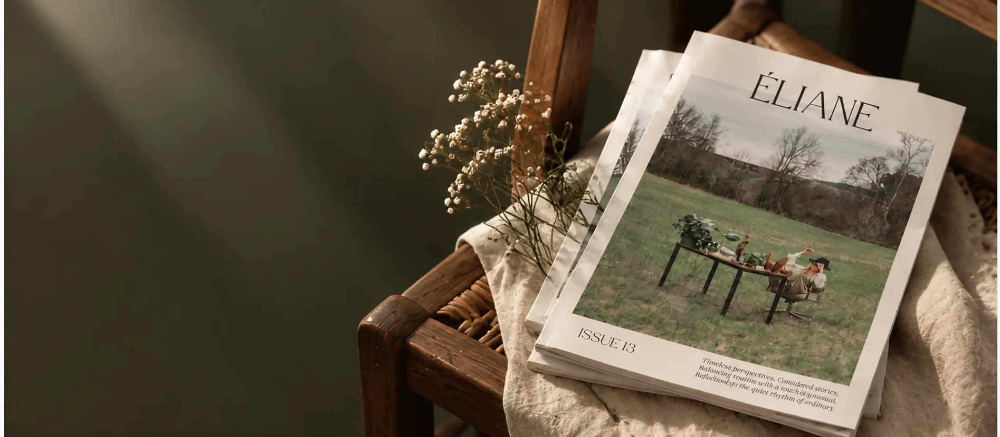
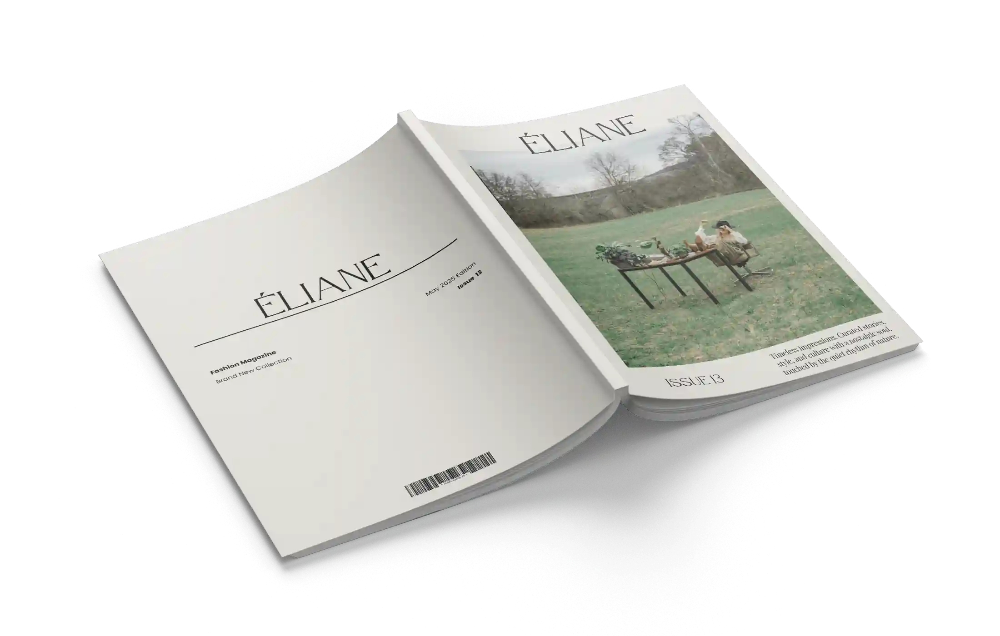
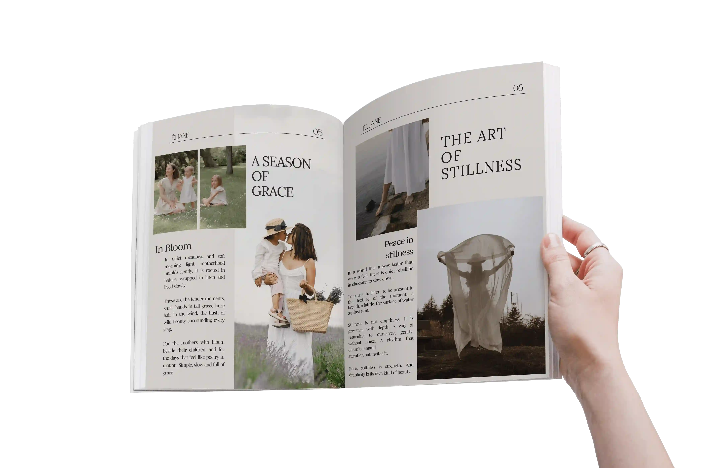
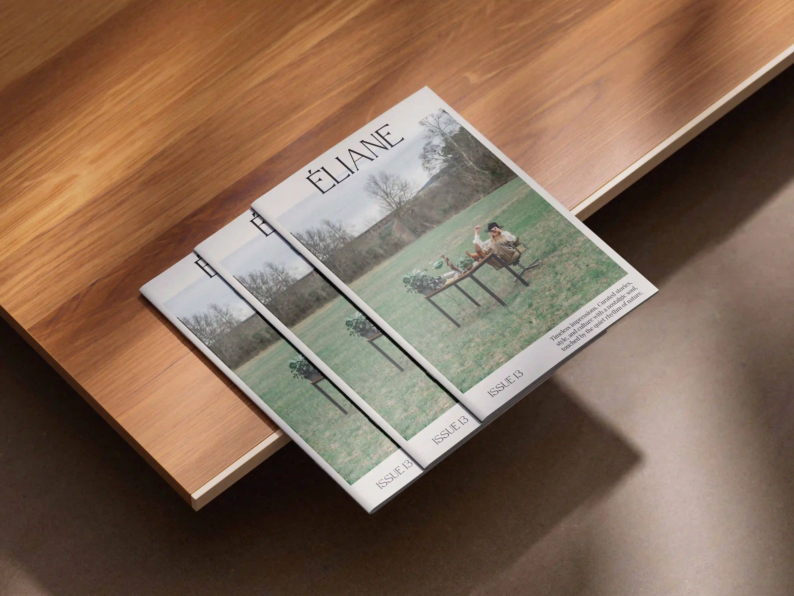

OPGAVE
Opgaven var at udarbejde et forslag til et magasin med valgfrit indhold. Magasinet skulle bestå af en forside, en bagside og minimum to indholdssider. Derudover skulle der benyttes licenserede billeder fundet online.

2024
Et minimalistisk modemagasin med fokus på natur, stil, nostalgi, ro og enkelhed gennem æstetisk layout og stemningsfulde billeder.
↓ SCROLL NEDOpgaven var at udarbejde et forslag til et magasin med valgfrit indhold. Magasinet skulle bestå af en forside, en bagside og minimum to indholdssider. Derudover skulle der benyttes licenserede billeder fundet online.
Jeg valgte at designe et minimalistisk modemagasin med fokus på natur, stil, nostalgi, ro og enkelhed. Jeg fandt relevante licenserede billeder online, udarbejdede et æstetisk layout og skrev korte, stemningsfulde tekster, der understøtter magasinets visuelle udtryk.
Adobe InDesign
1 dag
Magasindesign og redaktionelt layout
Det færdige magasin kombinerer minimalistisk typografi, stemningsfulde billeder og et roligt layout. Forside, indholdssider og bagside er samlet i et gennemgående visuelt udtryk med fokus på natur, stil og nostalgi.


